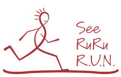
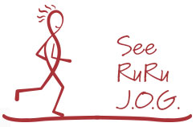
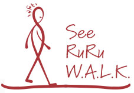

Whether you are hiring 5 people this year or 50, or simply could use some HR support in any area, we’ve got you covered. Our hourly billing model and on-demand approach is customizable, flexible, and continually modifiable in response to your changing needs. We save you time, money, and hassles while we seamlessly mesh our services with your current internal hiring and HR strategies. We get the job done -- and done well!
Do any of these scenarios sound familiar? No need to worry. We can help you no matter what phase of growth you are in -- and with any HR need. Consider us a highly experienced and efficient extension of your team.
R u Ramping Up Now?Is your company in high-growth mode and you needed to fill 20 positions like yesterday? Are your internal resources stretched to the max? Are you spending too much on contingency recruiters or are you considering hiring an in-house recruiter? We can efficiently augment your current situation – filling your open reqs with great hires quickly while freeing up your time and saving you money.
FIND OUR MORE
R U Juggling Ordinary Growth?R U Juggling Ordinary Growth?
Are you growing at a steady pace with 1-10 new positions a year? Might you benefit from drawing from a wider pool of qualified candidates to ensure you are optimally growing your team? First, we will sit down with you to understand your needs and how we can best support you. Whether you choose to have us manage the entire hiring process or just the specific tasks you’d most like to clear from your plate, we are flexible and fluid.
FIND OUR MORE
While All Looks Kalm �(or Calm!)Now is a great time to tackle those HR projects that have been on the back burner, or maybe now are on fire! Are your employees happy and thriving? Would you like help creating an employee development or retention program or re-evaluating your employee review process? Has it been a while since you’ve updated your HR policies? Our human resources experts can help you with any HR matter.
FIND OUR MORE